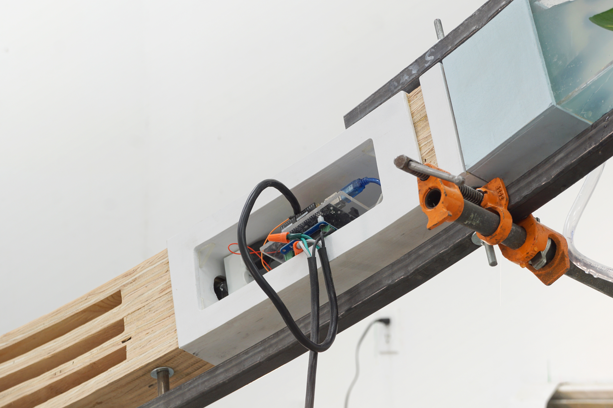
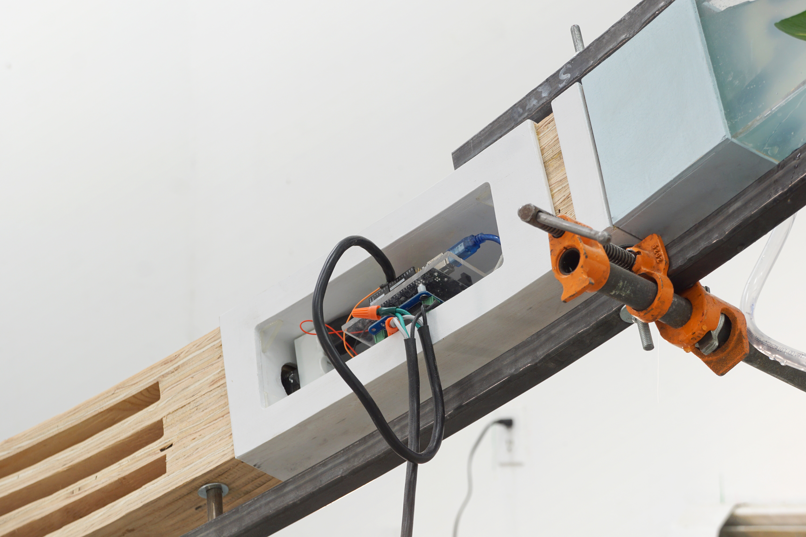

Firmament Arch is part of a series of work that reimagines cosmological structures of the past: the pillars of heaven, the firmament, the great deep, the ocean of heaven, etc. as architectural backbones of our future infrastructure and defining forces in our relationship to nature. Ultimately, these works aim to describe the constructed qualities of climate change and the structure of the built environment in the face of ecological collapse.
In religious cosmology, the sky was conceptualized as a physical structure – a firmament – that separated earth from the oceans of heavens. Firmament Arch references the architecture of our increasingly necessary biodomes and greenhouses and re-imagines them as the firmament structures of tomorrow. The curved backbone of the work houses a network of tanks, tubes, pumps, and nozzles that create an aeroponic growing environment, allowing plants to grow in irregular and confined spaces with minimal water waste or reliance on natural light.
Completed with the Clowes Fund Fellowship at the Vermont Studio Center. April 2019.


 
